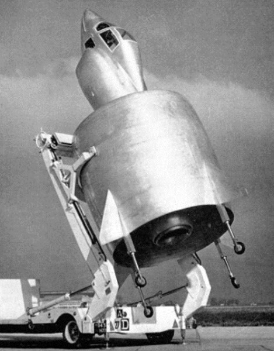

Ever since the dawn of heavier-than-air flight, inventors have tried to design new kinds of aircraft in order to achieve improved performance, introduce new capabilities, or just do something different. In this series we describe some of the stranger aircraft that have actually flown.
This month we celebrate France's SNECMA Coléoptère, another "tail sitter" from the 1950s. The remarkable thing about this prototype Vertical Take Off and Landing aircraft was that it had a single annular wing that encircled the engine. As with most VTOL aircraft the transition from vertical to horizontal flight proved highly challenging and the Coléoptère was destroyed during testing when it crashed attempting such a manoeuvre! (The pilot ejected safely.)
